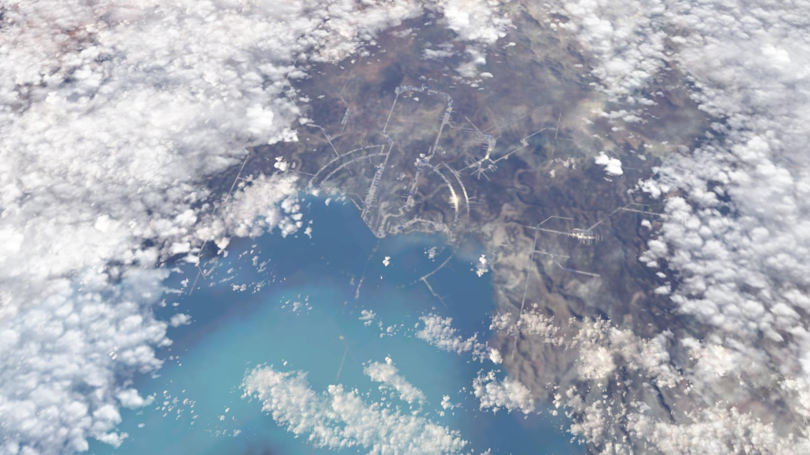
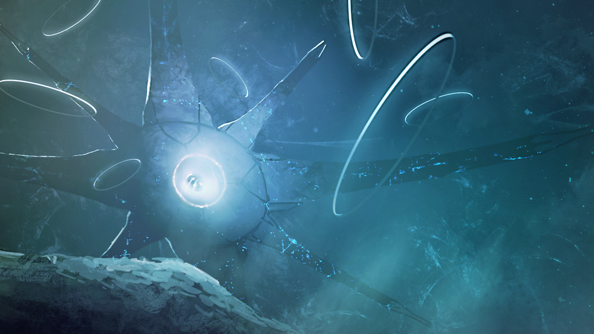

Die Arche
Die Arche oder auch Installation 00 ist eine Raumstation außerhalb unserer Galaxy die mann durch ein Portal auf der Erde erreichen kann. Die Installation dient als "Halo Fabrik". Sie wurde durch die Menschen stark beschädigt.


Quellen und weiter Informationen
Installation 00, Halo wikia